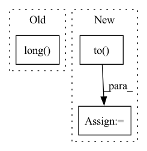

Pattern ID :15023

Before Change
// lengths: [4, 2, 5]
// position: [[4, 3, 2, 1, 0], [2, 1, 0, 0, 0], [5, 4, 3, 2, 1]]
position = self.len_range[:seq_len].unsqueeze(0).repeat(batch_size, 1)
position = (lengths[:, None] - position) * valid_his.long()
pos_vectors = self.p_embeddings(position)
his_vectors = his_vectors + pos_vectors
// Self-attention
After Change
// Self-attention
causality_mask = np.tril(np.ones((1, 1, seq_len, seq_len), dtype=np.int))
attn_mask = torch.from_numpy(causality_mask).to(self.device)
// attn_mask = valid_his.view(batch_size, 1, 1, seq_len)
for block in self.transformer_block:
his_vectors = block(his_vectors, attn_mask)
his_vectors = his_vectors * valid_his[:, :, None].float()
In pattern: SUPERPATTERN
Frequency: 4
Non-data size: 3
Instances
Fragment ID: 50450849
Project Name: thuwangcy/rechorus
Commit Name: dba1d0bd7b6d7296ed6c730793e0f61278007dc2
Time: 2020-11-08
Author: THUwangcy@gmail.com
File Name: src/models/sequential/SASRec.py
M Class Name: SASRec
N Class Name: SASRec
M Method Name: forward(2)
N Method Name: forward(2)
M Parent Class: GRU4Rec
N Parent Class: GRU4Rec
M File Name: src/models/sequential/SASRec.py
N File Name: src/models/sequential/SASRec.py
M Start Line: 41
M End Line: 72
N Start Line: 41
N End Line: 66
'>
Before Change
input_ids, targets = pandora_embeddings(datafile, tokenizer, token_length)
input_ids = torch.from_numpy(np.array(input_ids)).long().to(DEVICE)
targets = torch.from_numpy(np.array(targets)).long().to(DEVICE)
self.input_ids = input_ids
self.targets = targets
After Change
if dataset_type == "pandora":
targets = targets.float().to(DEVICE)
else:
targets = targets.long().to(DEVICE)
self.input_ids = input_ids
self.targets = targets
'>
Fragment ID: 50450853
Project Name: yashsmehta/personality-prediction
Commit Name: 53462ed81bba90c9deeb1ccb4ee3603d2c082c28
Time: 2020-06-07
Author: amirmohammadkz@gmail.com
File Name: data_utils.py
M Class Name: MyMapDataset
N Class Name: MyMapDataset
M Method Name: __init__(6)
N Method Name: __init__(6)
M Parent Class: Dataset
N Parent Class: Dataset
M File Name: data_utils.py
N File Name: data_utils.py
M Start Line: 194
M End Line: 194
N Start Line: 194
N End Line: 200
'>
Before Change
centroid_ids.append(_centroid_ids)
centroid_ids = torch.Tensor(centroid_ids).long()
centroid_ids = centroid_ids.to(data.device)
return centroid_ids
After Change
for _data in data:
_centroid_ids = torch.randperm(num_samples)[:1]
_centroid_ids = _centroid_ids.to(_data.device)
for _ in range(K - 1):
centroids = _data[_centroid_ids] // (num_samples, num_features)
'>
Fragment ID: 50450840
Project Name: tky823/dnn-based_source_separation
Commit Name: 81f39baf67d036843ce01722c84470c109b0b03d
Time: 2021-11-22
Author: delta9guitar97@gmail.com
File Name: src/algorithm/clustering.py
M Class Name: KMeansBase
N Class Name: KMeansBase
M Method Name: _init_kmeans_pp(2)
N Method Name: _init_kmeans_pp(2)
M Parent Class: nn.Module
N Parent Class: nn.Module
M File Name: src/algorithm/clustering.py
N File Name: src/algorithm/clustering.py
M Start Line: 78
M End Line: 95
N Start Line: 90
N End Line: 107
'>
Before Change
torch.nn.init.normal_(self.weight, mean=0, std=init_std)
def forward(self, X, sparse_feat_refine_weight=None):
sparse_embeddings = [self.linear_embedding_dict[feat.embedding_name](X[
:, self.feature_name_to_index[feat.name][0]:self.feature_name_to_index[feat.name][1]
].long()) for feat in self.sparse_feature_columns]
dense_values = [X[
:, self.feature_name_to_index[feat.name][0]:self.feature_name_to_index[feat.name][1]
] for feat in self.dense_feature_columns]
After Change
linear_logit = torch.zeros([X.shape[0], 1]).to(self.device)
if len(sparse_embeddings) > 0:
linear_logit = linear_logit.to(sparse_embeddings[0].device)
sparse_embedding_cat = torch.cat(sparse_embeddings, dim=-1)
if sparse_feat_refine_weight is not None:
sparse_embedding_cat = sparse_embedding_cat * sparse_feat_refine_weight.unsqueeze(1)
sparse_feat_logit = torch.sum(sparse_embedding_cat, dim=-1, keepdim=False)
'>
Fragment ID: 50450843
Project Name: ryantd/veloce
Commit Name: a922a256c72ee1e9e4456e4295afa0aa825f0315
Time: 2022-01-04
Author: xiaoyu.zhai@hotmail.com
File Name: phetware/model/torch/base.py
M Class Name: Linear
N Class Name: Linear
M Method Name: forward(3)
N Method Name: forward(3)
M Parent Class: nn.Module
N Parent Class: nn.Module
M File Name: phetware/model/torch/base.py
N File Name: phetware/model/torch/base.py
M Start Line: 75
M End Line: 83
N Start Line: 63
N End Line: 71